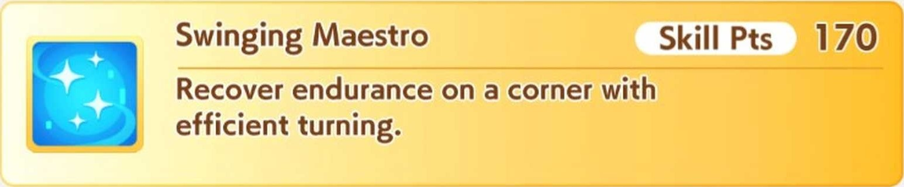

El entrenamiento es crucial para progresar en el juego, y aqui nos vamos a centrar en el gameplay y en lo que se basa el juego: gestion de recursos, porque si, el juego durante la carrera te dará ciertas opciones de entrenamiento y donde dependerá de tu habilidad de gestion, toma de decisiones y vision a largo plazo para que tu gameplay de sus frutos, pero empecemos por lo basico, la interfaz, seguro habrás visto demasiadas cosas, pero calma que te explico.
En las siguientes secciones, si pasas el cursor sobre las palabras en mayúsculas, se te mostrará un ejemploEl entrenamiento
Primero esta algo llamado Turns que son cuantos turnos tienes antes de una carrera, tienen que ser aprovechados al maximo en entrenamientos, pues habrá veces que tengas solo 5, 4 o hasta 3 que te pondrá en aprietos si no aprovechaste bien los turnos.
Luego estan los goals que cumplir para avanzar en la carrera, en se puede ver los diferentes objetivos (quedar en X posicion en carreras) los objetivos pueden variar dependiendo del personaje ya que no todas tendrán los mismo objetivos.
Habrá una barra de energía en colores azul-verde-rojo, es la barra de energía de tu Uma, cada entrenamiento que hagas la ira drenando, algunos mas y otros menos, mantenerla en alto siempre es prioridad para entrenar mas y evitar fallar.
Al lado está el que basicamente es el estado de animo de tu Uma, estado al que tienes que prestarle atencion y cerciorarte que siempre este en Great, Good o por lo menos Normal ya que puede beneficiar o perjudicar entrenamientos o carreras.
La barra llena de numeros simplemente es las stats que tienes en ese momento, que tan altas o bajas las tienes en terminos numericos.
Abajo estarán las cosas que puedes hacer, desde entrenar, descansar, habilidades, enfermería, recreación y carreras, todos a excepción de las habilidades consumirán un turno, asi que debes tomar decisiones cruciales, tomar descansos solo cuando sea necesario o curar alguna condicion mala que tengas, pero casi todos los turnos deben irse a entrenar o carreras dependiendo de tu caso.
Luego tenemos los entrenamientos, habrán 5 tipos de entrenamiento para cada stat, de entrada cabe decir que aunque dependerá mucho del personaje que usemos será el stat a mejorar, todos necesitarán mejorar los 3 primeros, que son la base de todo y lo que te hará ganar carreras.
Ya hablamos antes de que tipo de stats requieres entrenar, enfoquemonos en la interfaz; cada entrenamiento tiene un nivel, nivel que ira aumentando conforme vayamos haciendo entrenamientos, va desde el nivel 1 al 5, y obviamente las stats subirán más conforme mayor sea el nivel.
Las Umas que estan al costado derecho son las cartas que escogimos, estas harán sus efectos justamente en los entrenamientos donde aparte de los eventos (más abajo) si maximizamos su nivel o llegamos al nivel 4 (cuando la barra este anaranjada) puede suceder el friendship training
El friendship training, también llamado rainbow traininig es cuando tienes almenos tus cartas a nivel 4 (la carta sube de nivel cada que entrenas con la carta), sucede de forma aleatoria y para un stat. Como se puede apreciar, 3 de las cartas tienen ese efecto arcoiris, puede aparecer solo una o varias como en este ejemplo, y mientras mas haya, mas puntos stat ganaremos (cuando son las 5 cartas y estan maximizadas puedes ganar hasta 100 puntos en un solo entrenamiento)
Cabe resaltar que cada entrenamiento tendrá un porcentaje de fallo y depende de la energía de la Uma, si tienes almenos la mitad será un entrenamiento seguro, si es menos de la mitad el porcentaje de fallo será mayor como en este caso, y si fallas cabe la posibilidad de que el mood de tu Uma baje, revisa la energía y se cuidadoso con tus movimientos.
Cada que entrenemos, no todo el tiempo pero casi siempre sucederá un evento de carta o de tu Uma, que es basicamente situaciones a modo de novela visual de cada personaje, estas aparte de entretener, tienen un fin, y es que al final de cada evento sueles recibir un aumento de stats determinados y con suerte, de energía o de estado de ánimo.
Normalmente dependiendo de que tipo de stat sea la carta (speed, staminam, guts, etc.) al final será el stat que aumente, el nivel también influye en que tantos puntos nos subirá, y también las decisiones, pues como se dijo, a modo de novela visual se contarán eventos y tendremos que ver y escoger opciones para responder, y dependiendo de eso, podemos o ganar puntos de stats o recuperar energía y/o ánimo.
Del mismo modo, si la carta tiene un signo de exclamación ❗ significa que ese entrenamiento va a .
Cabe decir que si fallamos un entrenamiento o si tenemos mala suerte y después de descansar nos pasa, puede que tengamos un evento donde si elegimos mal la respuesta, pueda darnos como bajar puntos de stats, energía, bajar el ánimo o lo peor, una condición que nos perjudicará hasta que la curemos.
También cabe recalcar que si no quieres ver los eventos y quieres ir rápido, esta la opción de skip (Aunque personalmente a mi me gustan)
Es recomendable subir rapido el nivel de las cartas entrenando, dado a que como se dijo antes, los entrenamientos friendship se dan cuando tienes una o mas cartas a nivel 4 o superior (mejor si están maximizadas) y sucede que despues de ciertas carreras, ocurrira un evento canónico en todas las Umas sin importar con quien juguemos, que es el viaje de verano.
Es el tipico evento de anime donde los personajes se van de vacaciones a un lugar, en este caso a la, este evento de verano en el juego dura cerca de 4 o 5 intentos, y lo crucial aquí es que cada entrenamiento subira al nivel 5 momentaneamente.
Asi como leiste, si no tenias los entrenamientos bien subidos de nivel (tenías algunos en nivel 3, 2 o 4) automáticamente en este evento subirán al nivel 5, momento en el que debes entrenar stats rezagadas o clave, y si tienes mucha suerte, con entrenamientos friendship puedes subir decenas de puntos de stat y fortalecer a tu Uma.
Ten en cuenta que aquí la energía es más importante que nunca, nunca vayas sin energía, pues si de por si descansar no es recomendable por perder turnos importantes, como dura pocos turnos el evento de verano, perderás la oportunidad de entrenar con el máximo nivel, vigila bien la energía.

Hablando de las carreras (no de las principales, carreras en general tipo G2 o G3) estas sirven para dos cosas, ganar puntos de experiencia que aunque se ganen entrenando y con eventos, serán mínimos los puntos de experiencia (aveces solo hasta 2 o 3) ganados mientras que en carreras se ganan muchos más, y aparte para ganar fans.
Muchos dicen que los fans no son utiles y aunque en parte es cierto, tienen dos utilidades, y es que cada meta/goal de tu Uma que es entrar a una carrera y quedar en X posición tiene una condición, y esa es tener un determinado número de fans, si tienes menos de el criterio, no podrás correr, y por ende perderás la partida, recuerda checar cuantos fans tienes en details.
La segunda utilidad es para subir de nivel la habilidad especial de tu Uma, cada Uma puede aprender habilidades pero tendrá una especial que se activará en plena carrera, y se puede subir de nivel la habilidad, ¿como? con los fans. Si tienes muchos fans (puedes buscar cuantos especificamente para tu Uma) en algun evento aleatorio, aparte de las ganancias de puntos de stats, la habilidad especial será subida al nivel 2 o 3. Tambien se puede subir aumentando la amistad con la directora.
Cada carrera individual te dará fans dependiendo en que posición quedes, normalmente se dan fans en el top 5 y obviamente ganaras más mientras mas alto en el top quedes, y al final de las carreras habrá una de fans donde podrás ver en que rango estas.
Por último, hablemos de las habilidades, que son en esencia, habilidades que puede aprender tu Uma y que aplicará en las carreras, deberás ver que habilidades convienen elegir analizando el perfil del personaje, si es buena en turf, dirt, si es buena como front-runner, pace-chaser, late-start, distancia de pista, stats clave, etc.
Existen dos tipos de habilidades, las comunes que estan marcadas de color blanco y las doradas, estas últimas son las mejores ya que tienen un porcentaje de activación casi totales y con mejores efectos, un ejemplo de habilidad meta es que recupera stamina en cada curva y se activa casi siempre, esencial para carreras largas donde la resistencia es vital.
Eso si, las habilidades doradas son mas caras en cuanto a puntos de experiencia por obvias razones, por lo que debes ahorrar puntos de experiencia o hacer carreras para obtenerlas.
Las habilidades se diferencian por colores, azul, rojo, verde y amarillo, los expertos concuerdan que las azules y amarillas son las mejores elecciones, pero dependerá tambien de cada Uma también.
Obivamente cada habilidad consumirá los puntos de experiencia, asi que se precavido y piensa bien que habilidades comprar.

Con esto ya repasamos lo esencial del entrenamiento y la interfaz, ahora te toca a ti entrenar a tu Uma en base a esto, buena suerte.
 | All rights reserved | Made with ❤︎.
| All rights reserved | Made with ❤︎.